library(tidyverse)3 SOM
3.1 Introduction
This tutorial introduces Self-Organizing Maps (SOMs), an unsupervised learning method for visualizing and clustering high-dimensional data. You’ll learn how to train a SOM, interpret its structure, and explore which features drive sample separation.
Based on https://payamemami.com/self_orginizating_maps_basics/, a document that also contains more in depth information about the method.
3.2 Data
We will use a dataset, a subset from The Cancer Genome Atlas, used with the mixOmics package. It includes mRNA, miRNA, and proteomics data for 150 breast cancer training samples (Basal, Her2, Luminal A) and 70 test samples (missing proteomics). For simplicity and more samples, we combine training and test sets and focus on the miRNA data.
library(mixOmics)
data(breast.TCGA)
x <- rbind(breast.TCGA$data.train$mirna,breast.TCGA$data.test$mirna)
group_labels <-c(breast.TCGA$data.train$subtype,breast.TCGA$data.test$subtype)# data dimensions
x |> dim() |> print () # dimensions of the data matrix (samples x features)
## [1] 220 184
group_labels |> as.factor() |> summary() # samples per group
## Basal Her2 LumA
## 66 44 110
# box plots
par(mfrow=c(2,1))
boxplot(t(x), main="distribution per sample", las=2, cex.axis=0.7, col=rainbow(10), outline=FALSE, cex.main=0.8)
boxplot(x, main="distribution per miRNA", las=2, cex.axis=0.7, col=rainbow(10), outline=FALSE, cex.main=0.8)
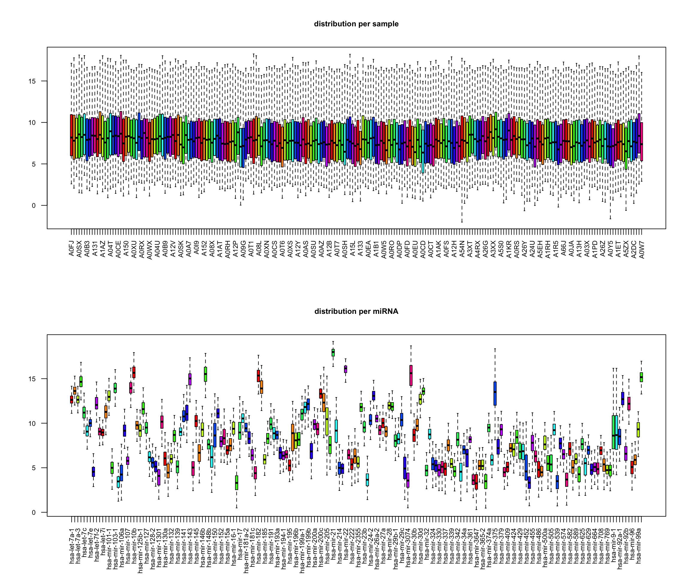
# perform PCA
pca <- prcomp(x, center=TRUE, scale.=FALSE)
eigs <- pca$sdev^2
var_exp <- eigs / sum(eigs)
res_pca <- data.frame(PC1=pca$x[,1], PC2=pca$x[,2], PC3=pca$x[,3], PC4=pca$x[,4], PC5=pca$x[,5]) |>
rownames_to_column("sample") |>
as_tibble()
res_pca_loadings <- pca$rotation
# show PCA scores plots
res_pca |>
ggplot(aes(x=PC1, y=PC2, color=group_labels)) +
geom_point() +
labs(title="PCA of miRNA data", x="PC1", y="PC2") +
xlab(paste("PC1 (Var: ", round(var_exp[1] * 100, 2), "%)")) +
ylab(paste("PC2 (Var: ", round(var_exp[2] * 100, 2), "%)")) +
theme_minimal() +
scale_color_manual(values=c("Basal"="#FF0000", "Her2"="#00FF00", "LumA"="#0000FF")) +
theme(legend.title=element_blank())
# show top 10 loadings along PC1
res_pca_loadings |>
as.data.frame() |>
rownames_to_column("miRNA") |>
arrange(desc(abs(PC1))) |>
head(10) |>
ggplot(aes(x=reorder(miRNA, PC1), y=PC1)) +
geom_bar(stat="identity", fill="steelblue") +
coord_flip() +
labs(title="Top 10 miRNAs contributing to PC1", x="miRNA", y="Loading") +
theme_minimal()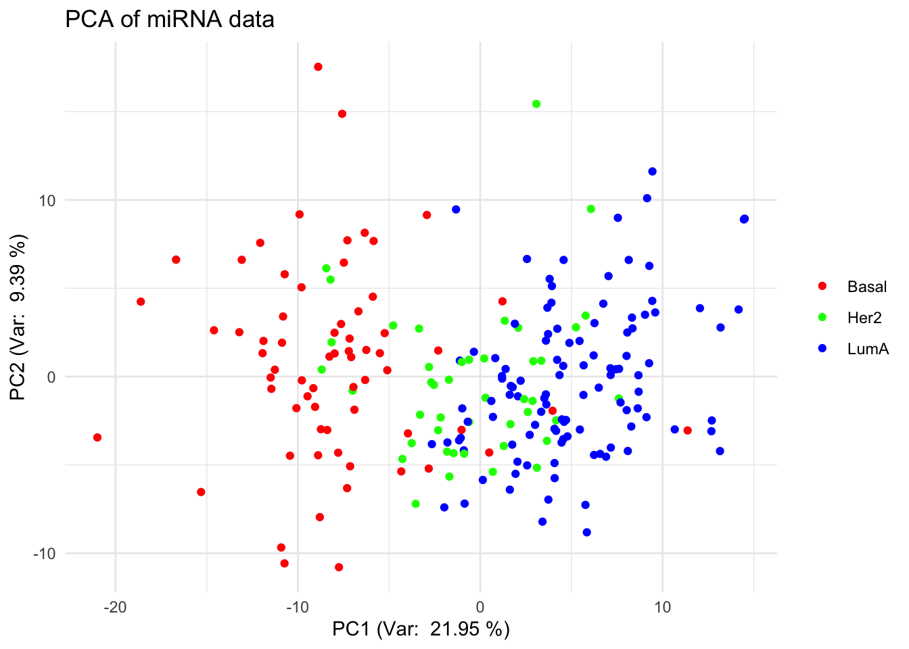

3.3 Train SOM
# load library
library(kohonen)
# define a 5x5 hexagonal grid
som_grid <- somgrid(xdim = 5, ydim = 5, topo = "hexagonal")
# Note: you can change size depending on your data
# create a fake grid
fakesom <- list(grid = som_grid)
class(fakesom) <- "kohonen"
dists <- unit.distances(som_grid)
plot(fakesom, type="property", property = dists[1,],
main="Distances to unit 1", zlim=c(0,6),
palette = rainbow, ncolors = 7)
# Note:
# - xdim, ydim: set the grid size (e.g., 5×5)
# - topo: defines the grid shape: "hexagonal" (default, smoother transitions) or "rectangular" (simpler, grid-like)
# - neighbourhood.fct: determines how updates spread during training
# - toroidal: If TRUE, wraps the grid edges (useful for cyclic data; usually FALSE in biological contexts)
# The choice of 'topo' affects how neurons connect and how neighborhoods form during training, with hexagonal layouts often yield more natural clusters
# train SOM
set.seed(101)
# scaled_data <- scale(data_input)
# don't forget to scale your data, here we leave for demonstration purposes
som_model <- som(X = x,
grid = som_grid,
rlen = 1000,
alpha = c(0.05, 0.01),
keep.data = TRUE)
# The algorithm iteratively updates neuron weights based on proximity to input data
# Key parameters:
# - data: Input data (should be scaled — SOMs are sensitive to variable ranges)
# - grid: The SOM grid created with somgrid()
# - rlen: Number of training iterations (how many times to cycle through the data)
# - alpha: Learning rate (e.g., from 0.05 to 0.01, decreasing over time)
# - keep.data: If TRUE, stores original data in the SOM object for later use
# After training:
# - Neurons (codebook vectors) are organized to reflect the structure of the data
# - Similar data points map to nearby neurons, dissimilar ones to distant neurons
som_model |> names() |> print()
## [1] "data" "unit.classif" "distances" "grid"
## [5] "codes" "changes" "alpha" "radius"
## [9] "na.rows" "user.weights" "distance.weights" "whatmap"
## [13] "maxNA.fraction" "dist.fcts"
# The resulting SOM object includes:
# - unit.classif: Index of the winning neuron for each observation
# - distances: Distance between each data point and its BMU (used to assess mapping quality)
# - grid: Grid structure (size, topology, neighborhood)
# - codes: Codebook vectors (final neuron weights)
# - changes: Tracks how much weights changed each iteration (helps assess convergence)
# - na.rows: Indices of excluded rows due to too many missing values
# - Training parameters and layer weights (for reproducibility and interpretation)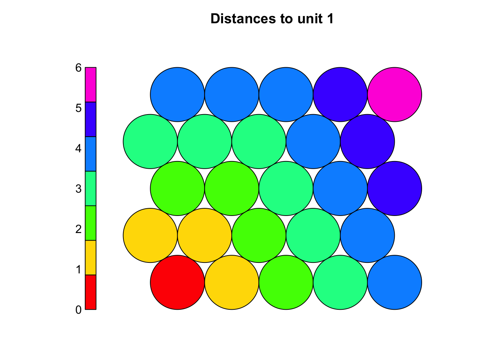
3.4 Evaluate SOM
# SOMs are unsupervised so there is no loss function, but performance can still be evaluated, e.g.
# - via quantization error
# - mapping plot
# - node count plot
# - "changes" values
# - U matrix
# Quantization error
# - Measures the distance between each data point and its best matching unit (BMU)
# - Indicates how well the codebook vectors approximate the input data
# - Lower values suggest better representation (acceptable range depends on data scale)
# Calculate average quantization error across all samples (the lower the better)
mean(som_model$distances) |> print() # average distance to BMU (quantization error)
## [1] 124.9259
# Inspect the distribution of distances to identify poorly mapped data points
# - if the distribution is wide or has many high values, it might indicate that the grid is too small or that the number of training iterations was insufficient.
hist(som_model$distances, main = "Quantization Error Distribution", xlab = "Distance to BMU")
# Mapping plot
plot(som_model, type = "mapping")
# Shows how input samples are distributed across the SOM grid
# - Crowded neurons (many samples in one unit) may indicate:
# - Insufficient training (not enough iterations)
# - Learning rate too low
# - Grid size not appropriate (too small or too large)
# Well-distributed samples suggest the SOM has effectively organized the data
# Node count plot
plot(som_model, type = "count")
# Shows how many samples map to each neuron
# A good SOM has most neurons occupied with some variation in density
# Too many empty nodes → possible underfitting (short training or large grid)
# Very few heavily occupied nodes → possible overfitting (small grid)
# Changes values
plot(som_model, type = "changes", main = "Distances")
# Plot the changes to see how much the neuron weights change over time
# A steadily decreasing curve means the SOM is learning
# If it hasn’t flattened out (no plateau), consider running more iterations
# U matrix (shows distances between neighboring neurons)
plot(som_model, type = "dis", main = "U-Matrix")
# Clear patterns (valleys/ridges) suggest meaningful clusters
# A flat U-matrix may indicate poor learning or overly uniform data
# If structure is unclear or quantization error is high:
# - Try increasing iterations (rlen)
# - Adjust learning rate (alpha), radius, or grid size
# - Run the SOM multiple times to compare results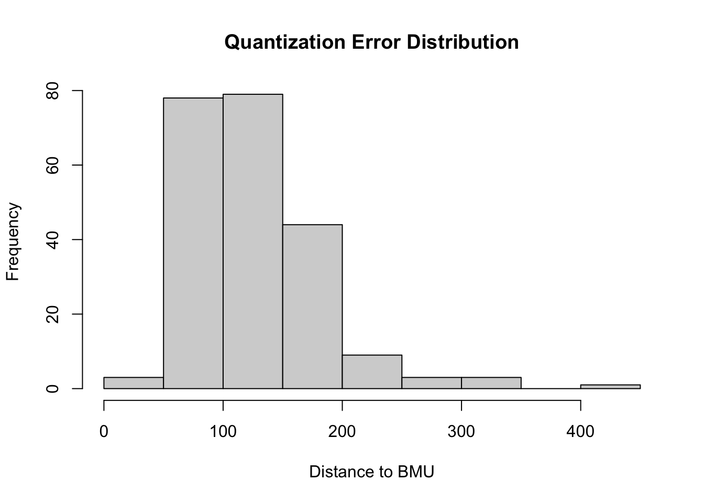
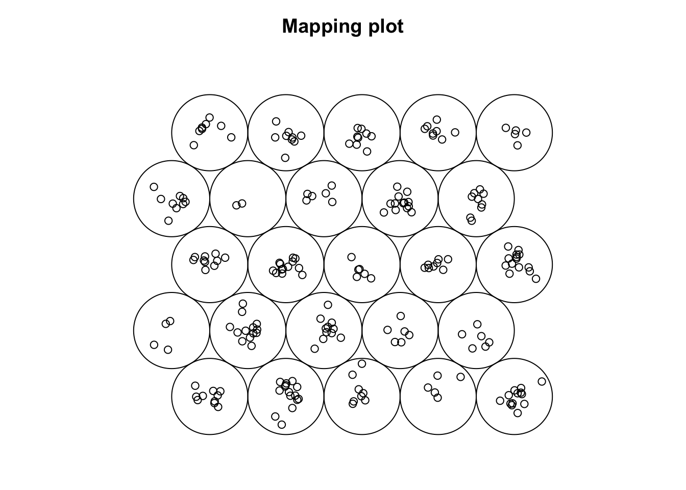
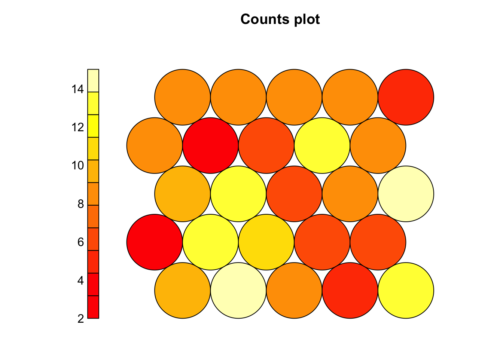
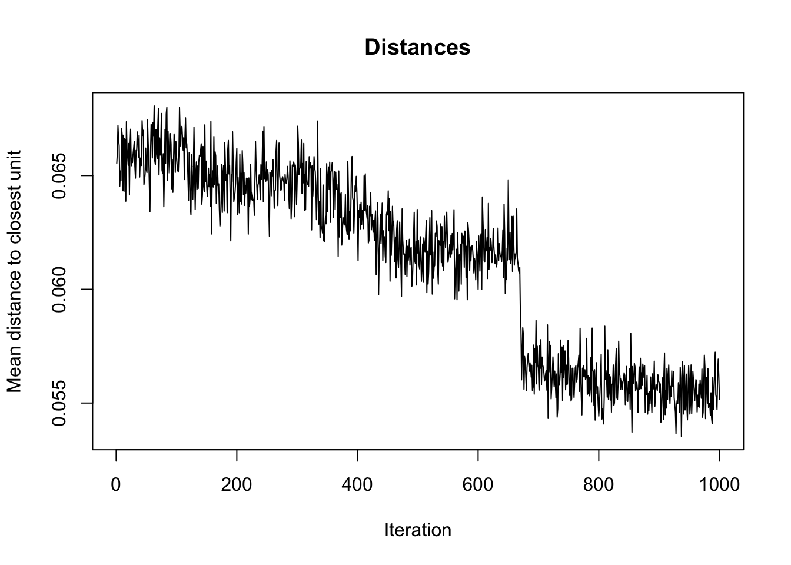
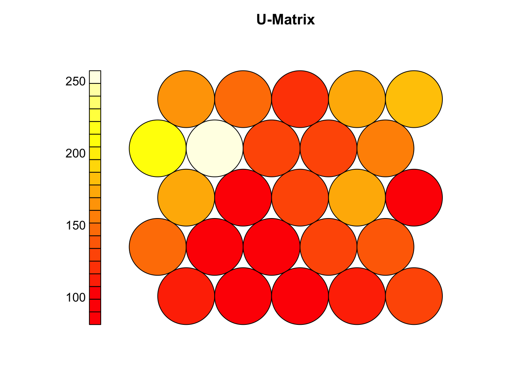
3.5 Visualize SOM results
# After training, SOMs help visualize high-dimensional data while preserving topology
# - Similar samples are mapped to nearby neurons on the grid
# - A mapping plot shows each sample's best matching unit (BMU)
# - Adding group labels can reveal how well the SOM separates known classes
# - Clear group separation → meaningful structure captured
# - Overlap → data may not be separable or SOM needs tuning
group_levels <- levels(group_labels)
colors <- setNames(c("tomato", "steelblue","black"), group_levels)
sample_colors <- colors[group_labels]
set.seed(101)
# Plot with colored samples
plot(som_model, type="map",
pchs = 21,
main = "SOM Mapping by Group (Basal, Her2, Luminal A)",
shape = "straight",
col = sample_colors)
legend(x = "top",legend = group_levels,col = c("tomato", "steelblue","black"),pch = 21)
# The mapping plot shows a left-to-right gradient of subtypes: Luminal A → Her2 → Basal
# - Subtypes cluster in distinct regions, not randomly mixed
# - Suggests the SOM captured meaningful biological structure in the miRNA data
# - It projects high-dimensional data onto a 2D grid, preserving similarity and neighborhood relationships
# - Neurons represent prototype vectors, updated iteratively to reflect the data structure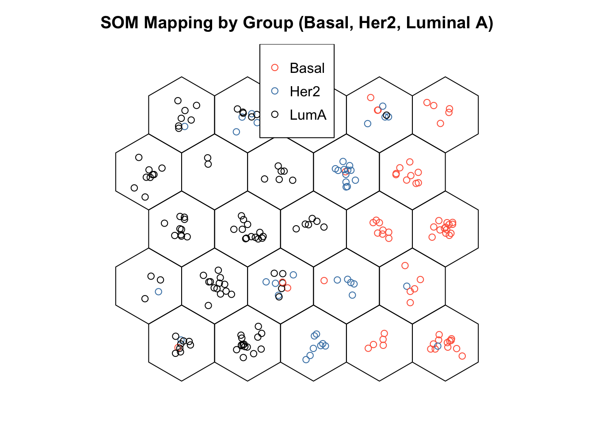
3.6 Cluster boundaries
# Interpreting the SOM often involves identifying meaningful clusters on the grid
plot(som_model, type="dist.neighbours",
pchs = 21,
main = "SOM distances to all immediate neighbours",
shape = "straight")
# The U-matrix (unified distance matrix) helps visualize these potential clusters:
# - Shows average distance between each neuron and its neighbors
# - Dark colors (red/orange) = similar neurons (low distances)
# - Light colors (yellow/white) = dissimilar neurons (high distances)
# Key observations:
# - Uniform dark areas = consistent groups or subtypes
# - Bright regions = natural boundaries between clusters
# High-distance zones may indicate transitions between sample groups
# U-matrix is useful for:
# - Visually identifying cluster boundaries
# - Guiding or validating later clustering (e.g., with k-means)
# - Exploring structure in data without predefined labels
coolBlueHotRed <- function(n, alpha = 1) {
colors <- colorRampPalette(c("blue", "white", "red"))(n)
adjustcolor(colors, alpha.f = alpha)
}
plot(som_model, type = "property",
property = som_model$codes[[1]][, "hsa-mir-130b"],
main = "Expression of hsa-mir-130b",palette.name = coolBlueHotRed)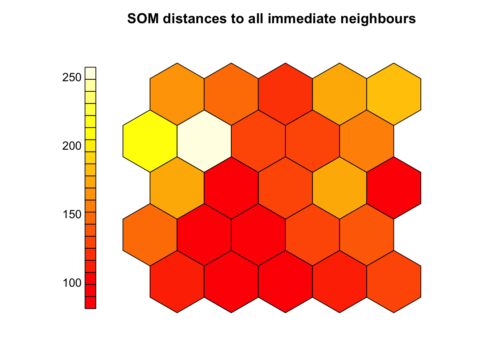
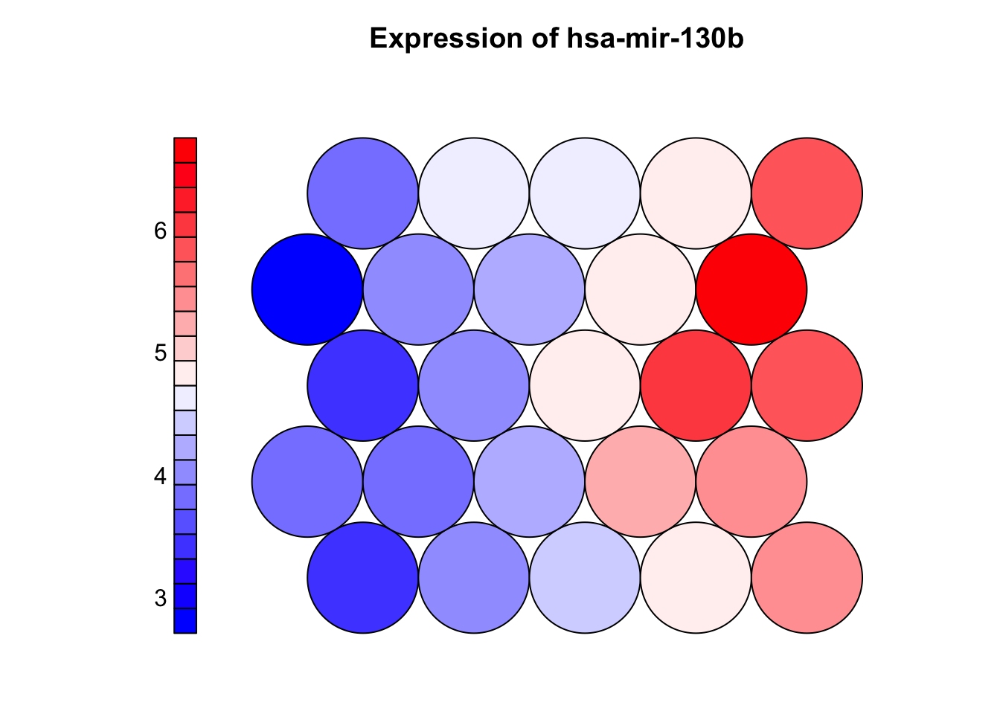
3.7 Property (heatmap) plot
# Property plots (component planes) show how a single variable is distributed across the SOM grid
# - Each neuron has a codebook vector (prototype) with one value per input feature
# - The plot maps one feature (e.g., a miRNA) across all neurons using color:
# - Warm colors = high values, cool colors = low values
# - Helps identify which variables are associated with specific clusters or subtypes
# - Strong patterns suggest informative features; uniform maps suggest weak/noisy features
# - Comparing multiple component planes can reveal co-expressed features or biomarkers
coolBlueHotRed <- function(n, alpha = 1) {
colors <- colorRampPalette(c("blue", "white", "red"))(n)
adjustcolor(colors, alpha.f = alpha)
}
plot(som_model, type = "property",
property = som_model$codes[[1]][, "hsa-mir-130b"],
main = "Expression of hsa-mir-130b",palette.name = coolBlueHotRed)
plot
## function (x, y, ...)
## UseMethod("plot")
## <bytecode: 0x7f88db2dd070>
## <environment: namespace:base>3.8 Clustering SOM
library(NbClust)
# SOM organizes samples on a grid but doesn’t assign explicit cluster labels
# - To define clusters, apply k-means (or similar) to the codebook vectors
# - Codebook vectors represent learned patterns and are suitable for clustering
# - we can use NBClust to help choose the optimal number of clusters:
# - it compares multiple validity indices to suggest the best k
# Extract codebook vectors
codes <- som_model$codes[[1]]
# Use NBClust to determine the optimal number of clusters
set.seed(123)
nb <- NbClust(data = codes, distance = "euclidean", min.nc = 2, max.nc = 10, method = "kmeans",index = "gap")
optimal_k <- nb$Best.nc[1]
# Perform k-means with the optimal number of clusters
set.seed(123)
km <- kmeans(codes, centers = optimal_k, nstart = 25)
# Assign a color to each cluster
cluster_colors <- rainbow(optimal_k)[km$cluster]
# Plot SOM with background colored by cluster
plot(som_model, type = "mapping",
bgcol = cluster_colors,pch=sample_colors,shape = "straight",
main = paste("SOM Clustering with", optimal_k, "Clusters"))
# Add boundaries around clusters
add.cluster.boundaries(som_model, km$cluster)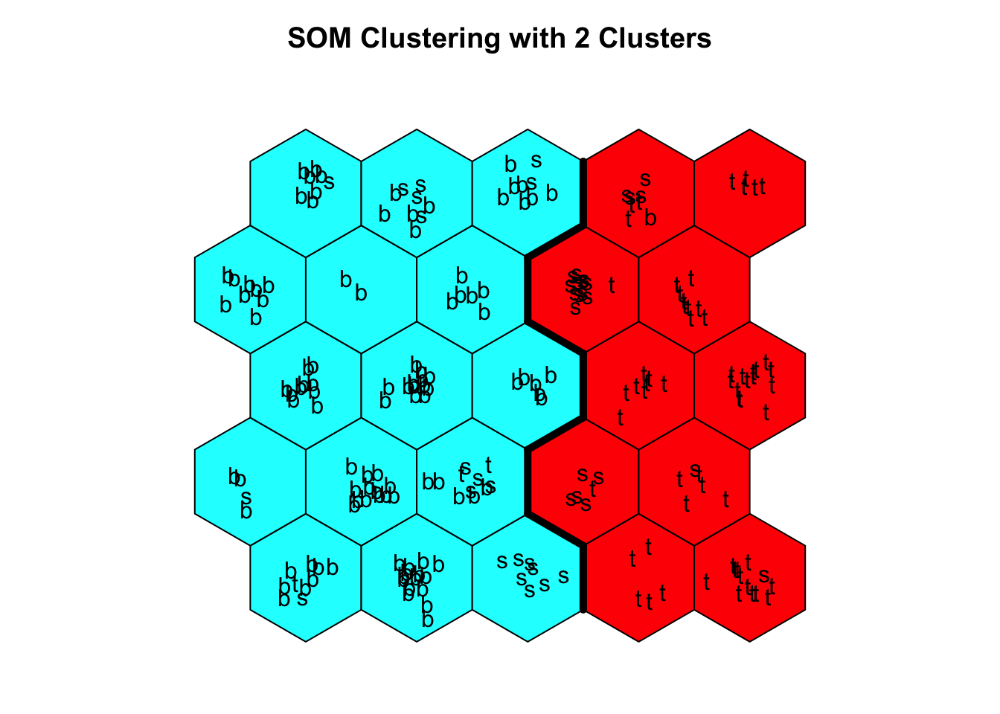
3.9 Exercise I (training SOM)
Task
Try out three different combinations of SOM training parameters and decide which one best organizes the data.
- Modify:
- Grid size (
xdim,ydim) - Number of iterations (
rlen) - Learning rate (
alpha)
- Grid size (
Suggested Configurations
Small grid + short training
xdim = 4, ydim = 4, rlen = 500, alpha = c(0.05, 0.01)Medium grid + moderate training
xdim = 6, ydim = 6, rlen = 1000, alpha = c(0.05, 0.01)Large grid + longer training
xdim = 8, ydim = 8, rlen = 1500, alpha = c(0.1, 0.01)
For each model, evaluate:
- Quantization error (
mean(som_model$distances)) - Node count plot (
plot(..., type = "count")) - Changes over time (
plot(..., type = "changes")) - Mapping plot to see sample distribution
Which SMO model is best for this dataset?
- Which configuration gives the lowest quantization error?
- Which model results in a well-utilized grid (few empty nodes)?
- Does one setup show clearer group separation on the map?
Example code
library(kohonen)
# Define parameter sets
configs <- list(
small = list(xdim = 4, ydim = 4, rlen = 500, alpha = c(0.05, 0.01)),
medium = list(xdim = 6, ydim = 6, rlen = 1000, alpha = c(0.05, 0.01)),
large = list(xdim = 8, ydim = 8, rlen = 1500, alpha = c(0.1, 0.01))
)
# Train SOMs
results <- list()
for (name in names(configs)) {
cfg <- configs[[name]]
grid <- somgrid(xdim = cfg$xdim, ydim = cfg$ydim, topo = "hexagonal")
model <- som(X = x, grid = grid, rlen = cfg$rlen, alpha = cfg$alpha, keep.data = TRUE)
results[[name]] <- list(model = model, config = cfg)
}# Quantization errors
cat("Quantization error:\n")
## Quantization error:
sapply(results, function(r) mean(r$model$distances)) |> print()
## small medium large
## 138.09869 114.06922 89.36413
# Plot node counts
par(mfrow = c(1, 3))
for (name in names(results)) {
plot(results[[name]]$model, type = "count", main = paste(name, "Node Count"))
}
# Plot training changes
par(mfrow = c(1, 3))
for (name in names(results)) {
plot(results[[name]]$model, type = "changes", main = paste(name, "Changes"))
}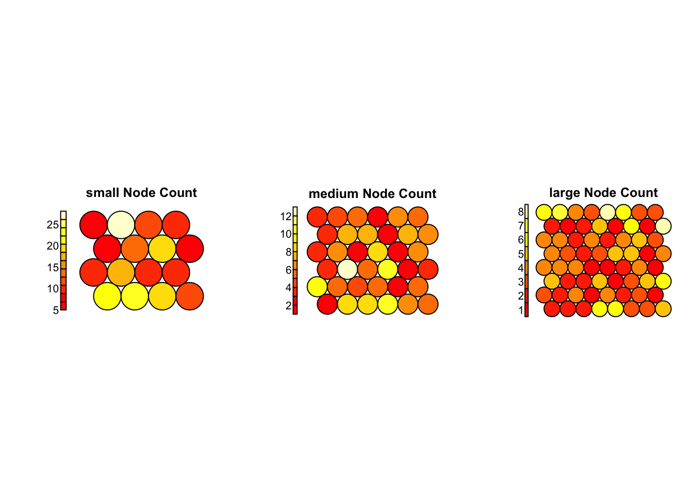

Interpretation
Changes Plot (Training Convergence):
- All models show a clear downward trend — the SOM is learning in each case.
largehas the lowest final error and smoothest convergence, indicating effective training.- It continues to improve throughout all 1500 iterations, with a clear plateau toward the end.
Node Count Plot (Grid Utilization)
small: Most nodes are heavily loaded (some with >25 samples), suggesting over-compression.medium: Shows better balance, but a few nodes still dominate.large: Most evenly used — no overcrowded or empty neurons, suggesting high resolution and effective organization.
Conclusion
- The
largeconfiguration (8×8 grid, 1500 iterations,alpha = c(0.1, 0.01)) performs best overall — offering stable training, good resolution, and balanced use of the grid.
3.10 Exercise II (features)
Task
Which Features Drive the Organization of the SOM?
Identify which top 10 variables (miRNAs) vary most across the SOM grid. Are they the same variables that drive separation along PC1 in the PCA model?
Hints:
- Extract the codebook matrix from the trained SOM using
som_model$codes[[1]]. Each row represents a neuron, and each column a feature. - For each feature (e.g., miRNA), calculate the standard deviation across all neurons.
- Identify the top 10 most variable features
- Use
plot(..., type = "property")to visualize the distribution of each top feature across the grid.
Example code
# Extract codebook matrix
codes <- som_model$codes[[1]]
# Calculate variability for each feature
feature_sd <- apply(codes, 2, sd)
# Identify top 10 most variable features
top_features <- sort(feature_sd, decreasing = TRUE)[1:10]
print(top_features)
## hsa-mir-9-1 hsa-mir-9-2 hsa-mir-203 hsa-mir-205 hsa-mir-375 hsa-mir-452
## 1.844150 1.840325 1.720440 1.554938 1.540482 1.452109
## hsa-mir-210 hsa-mir-505 hsa-mir-17 hsa-mir-150
## 1.334261 1.266085 1.247510 1.225252
# Custom color palette
coolBlueHotRed <- function(n, alpha = 1) {
colors <- colorRampPalette(c("blue", "white", "red"))(n)
adjustcolor(colors, alpha.f = alpha)
}
# Plot top features as component planes
par(mfrow = c(5, 2)) # grid layout for plotting
for (feature in names(top_features)) {
plot(som_model, type = "property",
property = codes[, feature],
main = feature,
palette.name = coolBlueHotRed)
}
# top features (along PC1)
top_loadings <- res_pca_loadings |>
as.data.frame() |>
rownames_to_column("miRNA") |>
arrange(desc(abs(PC1))) |>
head(10) |>
dplyr::select(miRNA, PC1)
# Compare the top features from SOM and PCA
print(top_features)
## hsa-mir-9-1 hsa-mir-9-2 hsa-mir-203 hsa-mir-205 hsa-mir-375 hsa-mir-452
## 1.844150 1.840325 1.720440 1.554938 1.540482 1.452109
## hsa-mir-210 hsa-mir-505 hsa-mir-17 hsa-mir-150
## 1.334261 1.266085 1.247510 1.225252
print(top_loadings)
## miRNA PC1
## 1 hsa-mir-9-2 -0.2238220
## 2 hsa-mir-9-1 -0.2232821
## 3 hsa-mir-17 -0.1665614
## 4 hsa-mir-505 -0.1629681
## 5 hsa-mir-452 -0.1589423
## 6 hsa-mir-19b-2 -0.1490989
## 7 hsa-mir-20a -0.1478199
## 8 hsa-mir-106a -0.1473630
## 9 hsa-mir-210 -0.1456352
## 10 hsa-mir-455 -0.1407413
print(intersect(names(top_features), top_loadings$miRNA))
## [1] "hsa-mir-9-1" "hsa-mir-9-2" "hsa-mir-452" "hsa-mir-210" "hsa-mir-505"
## [6] "hsa-mir-17"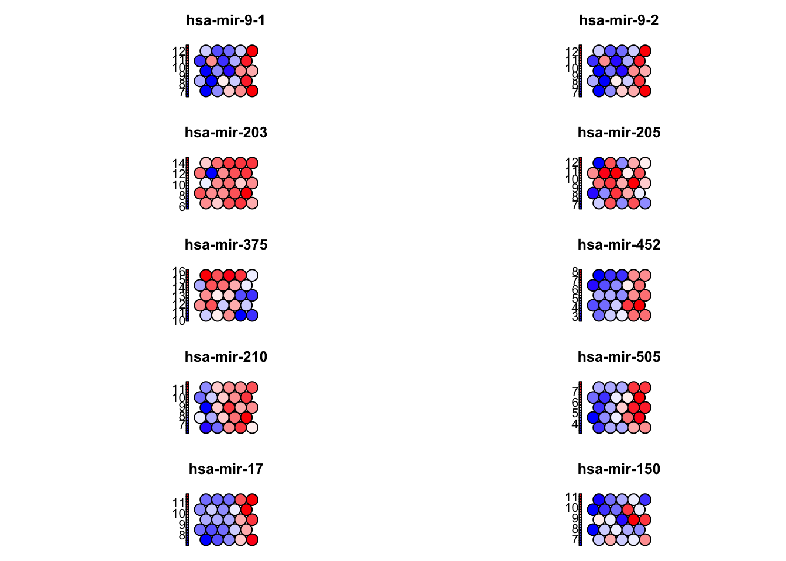
3.11 What to explore next
Latest advances in SOMs
Supervised variants such as generalized SOMs now incorporate label information to guide map layout for classification tasks, while supervised Kohonen networks combine clustering with prediction, useful in clinical contexts like cancer prognosis. Multi-omics and multi-view extensions, including layered SOMs, allow integration of diverse data types (e.g., mRNA, miRNA, proteomics) by aligning SOM layers through shared topology. Time-aware models like SOMTimeS apply dynamic time warping to cluster biological time series such as longitudinal gene expression. In single-cell biology, FlowSOM efficiently handles millions of cytometry events and is widely adopted in platforms like Bioconductor. Visualization has improved with tools like U-Matrix++ and projection-based SOMs that embed t-SNE or UMAP to retain global data structure. Finally, scalable implementations using TensorFlow, PyTorch, or Julia have enabled SOMs to process large-scale omics and clinical datasets using GPU acceleration